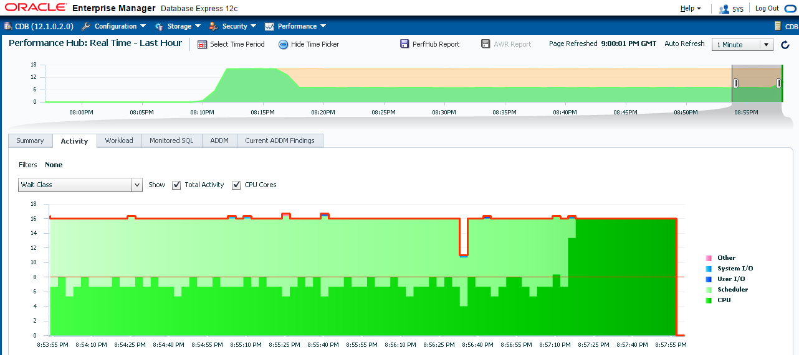

This was first published on https://www.dbi-services.com/blog/instance-caging-and-multitenant-do-the-right-setting/ (2016-06-12)
Republishing here for new followers. The content is related to the versions available at the publication date.
When you want to do instance caging, you have to set manually CPU_COUNT and to set a resource manager plan. If you
.
only the CPU_COUNT no instance caging will occur. Except during the maintenance window where the maintenance plan is set internally. You don’t want that kind of unpredictable behavior, so the recommandation is to always set a resource plan when you set manually CPU_COUNT. Here is another reason for such an unpredictable behavior.
I’ve run 16 sessions running CPU. I’m in multitenant and they are connected to CDB$ROOT.
[oracle@CDB ~]$ jobs
[1] Running sqlplus / as sysdba <<< "exec loop null; end loop;" &
[2] Running sqlplus / as sysdba <<< "exec loop null; end loop;" &
[3] Running sqlplus / as sysdba <<< "exec loop null; end loop;" &
[4] Running sqlplus / as sysdba <<< "exec loop null; end loop;" &
[5] Running sqlplus / as sysdba <<< "exec loop null; end loop;" &
[6] Running sqlplus / as sysdba <<< "exec loop null; end loop;" &
[7] Running sqlplus / as sysdba <<< "exec loop null; end loop;" &
[8] Running sqlplus / as sysdba <<< "exec loop null; end loop;" &
[9] Running sqlplus / as sysdba <<< "exec loop null; end loop;" &
[10] Running sqlplus / as sysdba <<< "exec loop null; end loop;" &
[11] Running sqlplus / as sysdba <<< "exec loop null; end loop;" &
[12] Running sqlplus / as sysdba <<< "exec loop null; end loop;" &
[13] Running sqlplus / as sysdba <<< "exec loop null; end loop;" &
[14] Running sqlplus / as sysdba <<< "exec loop null; end loop;" &
[15]- Running sqlplus / as sysdba <<< "exec loop null; end loop;" &
[16]+ Running sqlplus / as sysdba <<< "exec loop null; end loop;" &
I’ve set CPU_COUNT to 8:
SQL> show spparameter cpu_count
SID NAME TYPE VALUE
-------- ----------------------------- ----------- ----------------------------
* cpu_count integer 8
but no resource manager plan:
SQL> show parameter resource_manager_plan
NAME TYPE VALUE
------------------------------------ ----------- ------------------------------
resource_manager_plan string
However, instance caging occurs: 
SQL> connect / as sysdba
Connected.
SQL> select count(*),con_id,session_state,event from v$active_session_history
2 where sample_time>sysdate-1/24/60/60 group by con_id,session_state,event;
COUNT(*) CON_ID SESSION EVENT
---------- ---------- ------- ------------------------------
20 1 WAITING resmgr:cpu quantum
12 1 ON CPU
Here you can see on the left that CPU usage has been limited to 8 user processes.
Any idea why instance caging occurred when there are no visible resource plan? And what did I do at 08:57 PM in order to stop instance caging?
Well, I did:
SQL> alter pluggable database pdb close;
Now you understand. A resource plan was set for the PDB:
SQL> alter session set container=PDB;
Session altered.
SQL> show con_id
CON_ID
------------------------------
3
SQL>
SQL> show spparameter cpu_count
SID NAME TYPE VALUE
-------- ----------------------------- ----------- ----------------------------
* cpu_count integer
SQL>
SQL> show parameter resource_manager_plan
NAME TYPE VALUE
------------------------------------ ----------- ------------------------------
resource_manager_plan string DEFAULT_PLAN
So be careful if you set CPU_COUNT manually, any settings that activates the Resource Manager. And setting a resource manager plan in a PDB activates the Resource manager for the instance as soon as the PDB is open (read/write or read only).
So the recommandation is: when you set CPU_COUNT in a CDB, then always set a Resource Manager Plan at CDB level. CDB_DEFAULT_PLAN is there for that:
https://twitter.com/MarisElsins/status/741738199257612294
(by the way, more information about resource manager and 12c in Maris Elsins presentation)
If you are in Standard Edition, or Enterprise Edition without the multitenant option, you have only one PDB per CDB. This means that you have probably multiple instances on one server and instance caging is of crucial importance there. Setting the resource_manager_plan to CDB_DEFAULT_PLAN is sufficient to activate instance caging in a single-tenant instance:
With multitenant option, you may create a custom plan with multiple directives. Instance caging is important even when you have only one instance on the server because the database scheduler is more efficient than the OS one. But that’s probably for a future blog post.
{kind=link}
{kind=link}